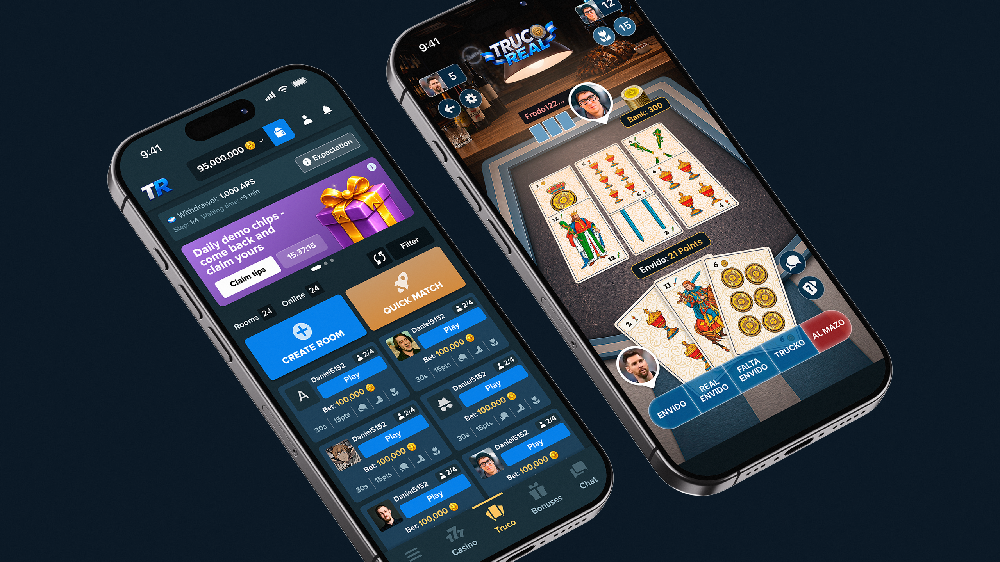
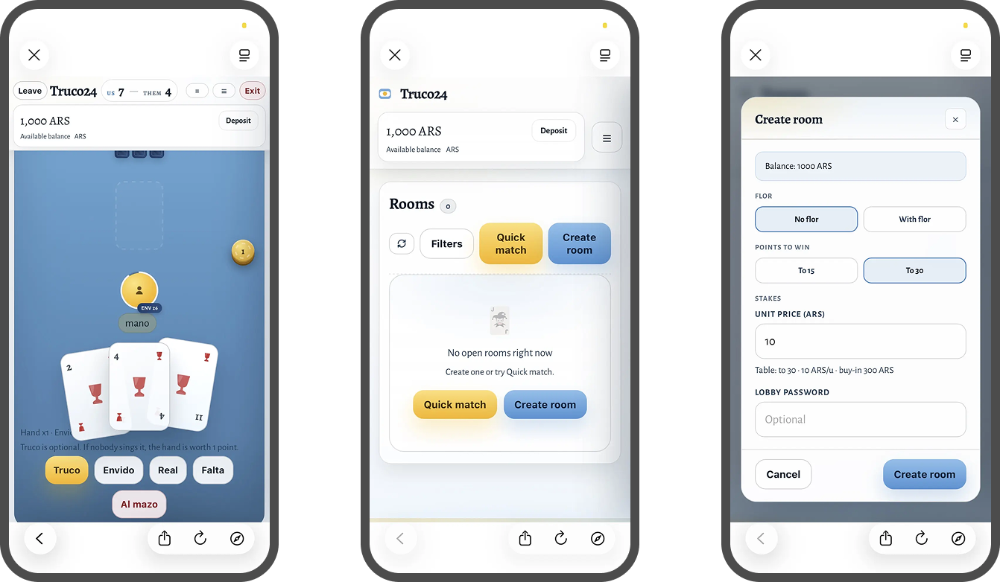
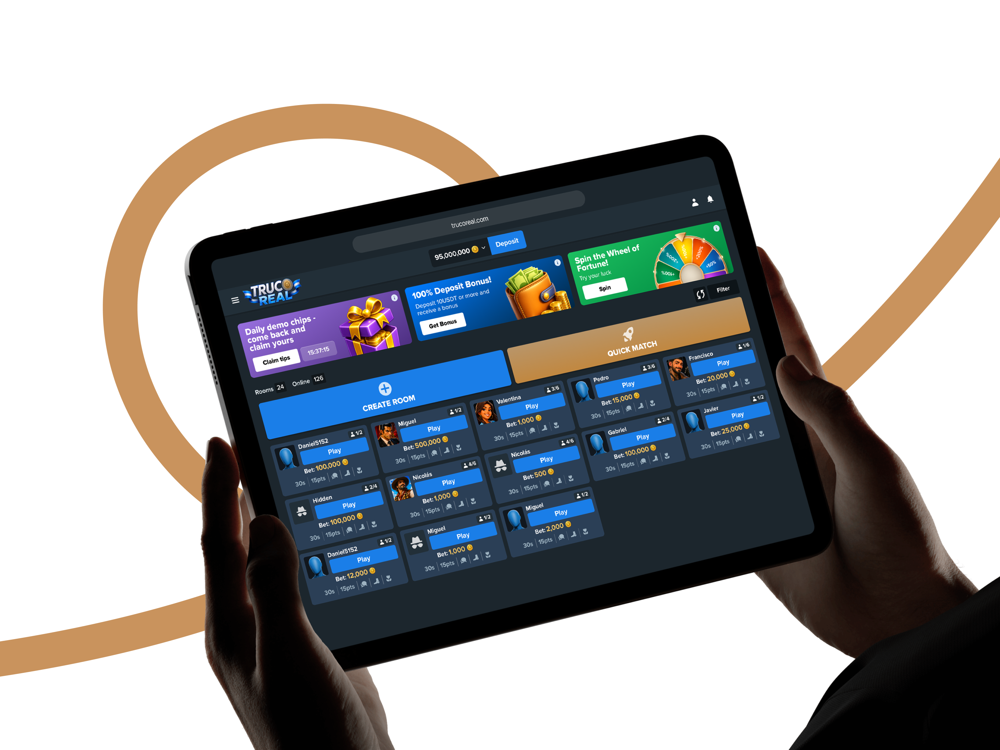
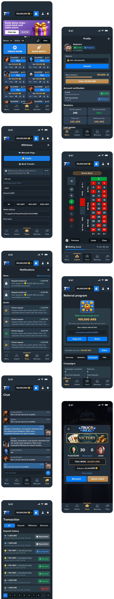
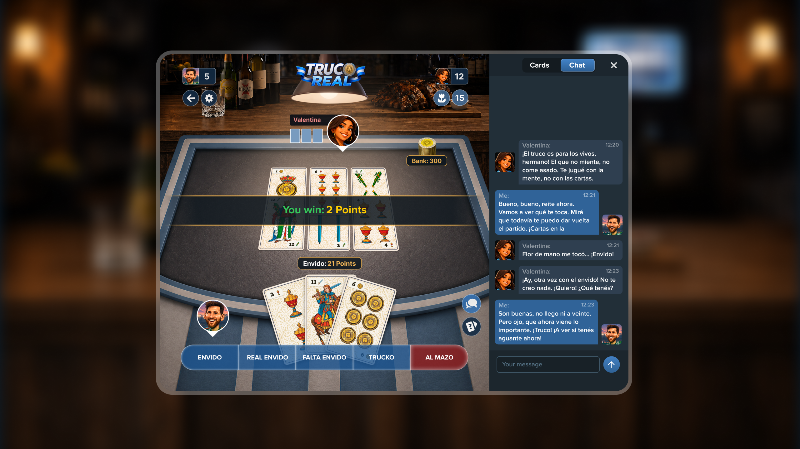

При разработке визуальной концепцией я проанализировал интерфейсы схожих проектов и крупных игроков в сфере iGaming. Главным критерием выбора референсов стал минималистичный дизайн. Я стремился избежать визуального и информационного шума. В качестве стилистических примеров согласовали платформы Stake и Bet360.
Основной задачей при разработке концепта было разработать простой минималистичный интерфейс, чтобы сфокусировать внимание пользователей на контенте и целевых действиях и не тратить драгоценное время на графический контент.




